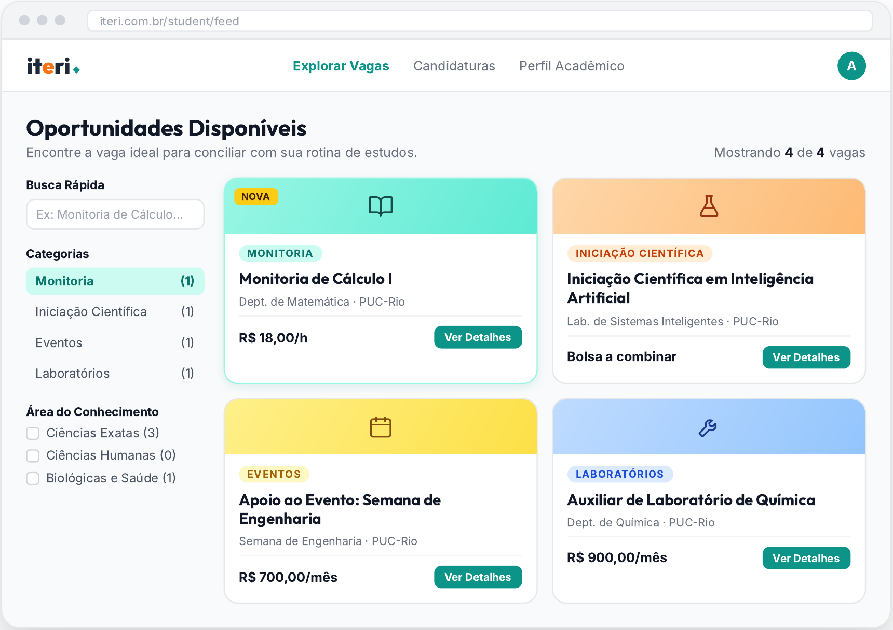
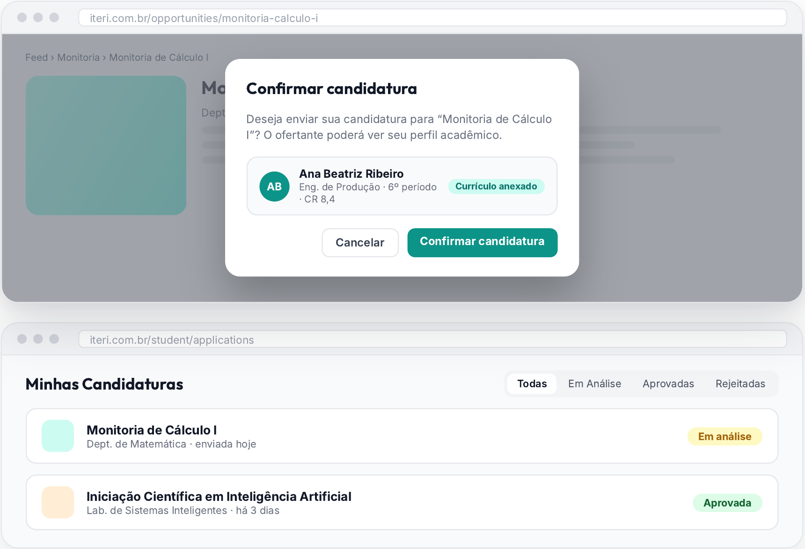

Caso 1 · Oportunidades integradas
A oportunidade interna existe.
O aluno não sabe onde procurar.
Monitoria
Iniciação científica
Laboratórios
Apoio a eventos
Hoje circulam por indicação, sem canal para publicar e receber candidaturas.
Filipe Gouveia Mota · Pedro Henrique C. Kubrusly · LIA Impact Lab · PUC-Rio
Decisão de escopo
Estágio já tem canal. O ITERI fica com o interno.
90,7%
dos anúncios do vagas.csv (3.220 de 3.550) são estágios publicados por uma única empresa_id, provável agente de integração.
1
anúncio do arquivo é, de fato, oportunidade interna da PUC-Rio.
analysis/00_escopo_estagio.py · analysis/05_anuncios_internos.py
Ler o dado antes de concluir
| O arquivo diz | O que concluímos |
|---|
| monitorias.csv: monitorias concedidas, 2024.1 a 2025.2 | Histórico, não vaga aberta |
| PIBIC e PIBITI: bolsas oferecidas por departamento e ano | Sem preenchimento: não falamos em bolsa ociosa |
| IDs de monitores e de alunos vêm de sistemas diferentes | Não cruzam: cruzamento só por curso |
analysis/README.md
O que o dado mostra
300 bolsas PIBIC e PIBITI em 2026
Total estável desde 2022. A divisão muda. Bolsas de Informática:
42022
102023
212024
322025
442026
24 de 58
disciplinas com monitor em 2025.2 já tinham monitor antes. A demanda se repete por departamento.
4,6%
dos alunos com interesse declarado citam pesquisa, docência ou monitoria (33 de 713).
analysis/01_monitorias.py · 02_bolsas_pibic.py · 04_interesse_academico.py
No ar em iteri.com.br


Feed: monitoria, IC, eventos e laboratóriosCandidatura em um clique e status
Telas do app com dados de exemplo
Arquitetura
NavegadorReact + Vite, publicado na Vercel
→
Supabase Authsó e‑mail @puc-rio.br, código por e‑mail
→
Postgres com RLS7 de 7 tabelas; ofertante só vê quem se candidatou
Trigger no Postgrespg_net
→
Edge Functionsend-notification-email
→
Resendaviso de status por e‑mail
Análise offline em analysis/Python, dados do repositório oficial; gera os números deste vídeo
Fora do apprecomendação por perfil ainda não implementada
supabase/migrations · supabase/functions
Processo com IA
9
interações registradas no AI Log, cada uma com evidência no repositório
Maior erro
Antes: deck com números sem código que os produzisse e "RLS em 12 de 12 tabelas".
Depois: análise refeita em scripts; o banco tem 7 tabelas, todas com RLS.
Menos confiável: a tabela manual que liga departamento a curso.
docs/AI_LOG.md · docs/RELATORIO_FINAL.md
Próximos passos
- 1Interesse acadêmico em lista fechada no cadastro
- 2Público de cada departamento visível ao ofertante
- 3Monitorias abertas por departamento a cada semestre
Fora por decisão: estágio e importação dos dados para o app.
github.com/filipegouveiamota-collab/iteri
Criação com dados e apoio da PUC-Rio